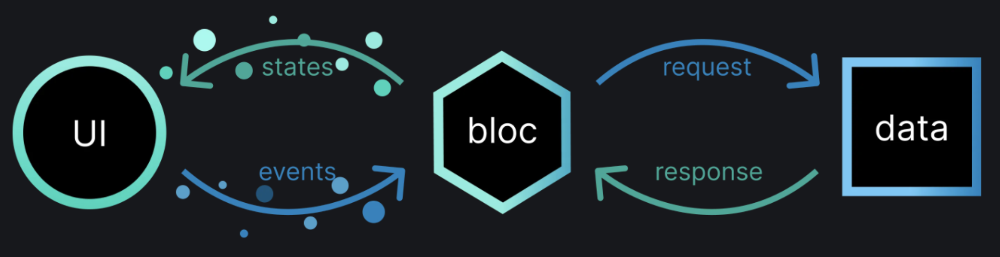

Introductie
In een app is het cruciaal dat gebruikers de informatie kunnen aanpassen aan hun behoeften. In de huidige implementatie van de Daily Practices App is dit echter nog niet mogelijk. Daarom gaan we in deze post “state” toevoegen aan de app om dit te realiseren.
In de laatste Flutter App Post heb ik de dagelijkse notificatie geïmplementeerd. In de post daarvoor heb ik de simpelste versie van de app (MVP) gemaakt, maar deze versie is niet netjes omdat de practices1 tussen de rest van de code staan. Daar komt in deze post verandering in. Zoals uitgelegd in de app structuur post, wilde ik in deze app de bloc library gebruiken om de user-interface, de business-logica en de data van elkaar te scheiden. Ik vind dat de Bloc library meer is dan alleen een code library, want in de documentatie staat ook veel uitleg over een handige structuur om aan te houden. Het doel hiervan is om straks makkelijk van een hardcoded practices implementatie naar een dynamische implementatie te gaan, zonder dat je veel code hoeft aan te passen omdat deze onderdelen van elkaar gescheiden zijn. Maar hoe werkt Bloc?
De Basis van Bloc
De Business Logic Component (Bloc) is een manier om “state” toe te voegen aan aan app. “State” is een manier om interactiviteit toe te voegen aan je apps. Dus zonder “state” zou je app statisch zijn (saai). Maar het beheren van “state” maakt de app ook complexer om te onderhouden. Daarom is Bloc bedacht, om het beheren van “state” te vereenvoudigen en los te koppelen.
Een Bloc is een class wat evenementen (events; voorbeelden zijn een klik op een knop of het starten van een app) als input neemt en op basis van het event een state als output geeft. Bijvoorbeeld: voordat je de app start is je scherm leeg. De Bloc krijgt het event “AppStart” binnen en op basis daarvan wordt eerst de state “Loading” teruggestuurd, waardoor je een laad schermpje te zien krijgt. Na het laden wordt de state “Finished”, waardoor je het start scherm te zien krijgt.
In de Bloc class wordt dus niet vastgelegd wat er in het scherm te zien is. De Bloc krijgt een event binnen, dan voert de Bloc een stuk code uit (vaak om data op te halen van een Repository) en als laatste stuurt de Bloc een state terug (waarin de opgehaalde data zit).
|  |
|---|
| Bloc Overview. Credits to https://bloclibrary.dev |
De user-interface code hoeft dan ook niet te weten hoe de Bloc werkt. Die code hoeft alleen een event te versturen en dan de state omzetten naar een user-interface. Daardoor is de code erg modulair en makkelijk te onderhouden.
Bloc Implementeren In De Daily Practices App
Data
In de data-laag haal je de onbewerkte (raw) data op. Vaak zijn dat simpele API’s die Create, Read, Updaten en Delete (CRUD) functionaliteit implementeren. Denk hierbij aan verbindingen met web API’s of de API van een database. Het voordeel van het scheiden van de data-laag is dat het makkelijk is om van bron te veranderen of juist een bron toe te voegen.
Voor iedere laag heb ik aparte packages gemaakt. Voor de data-laag zijn dat de practices_api en hardcoded_practices_api. De practices_api bevat de interface van hoe de API eruit moet komen te zien. Het is een blauwdruk van een specifieke implementatie en een specifieke implementatie zit in de hardcoded_practices_api. Met deze blauwdruk is het makkelijk om een andere implementatie te maken (iets wat ik later wil doen).
In dit geval is de API nog heel simpel en heeft het alleen de functionaliteit om een lijst van practices op te vragen met de getPractices method.
Repository
De repository-laag is een laagje over de data-laag. Hierdoor kan je bijvoorbeeld meerdere data-lagen samen voegen. Daarnaast is de repository ook de plek waar je de onbewerkte data uit de data-laag, transformeert naar de data die je applicatie nodig heeft. De repository-laag is de laag waarmee de Bloc-laag communiceert.
In deze app zit de repository in de practices_repository package. Eerlijk gezegd voelt de repository nu nog wat overbodig, want het enige wat het doet is een method met dezelfde naam aanroepen die in een API is gedefinieerd, namelijk getPractices(). Het voordeel van een repository komt vooral later wanneer je verschillende data bronnen wilt samenvoegen en transformeren.
Bloc
De Bloc-laag, zoals hierboven uitgelegd, ontvangt events en geeft states terug. De Bloc communiceert met de user-interface (door middel van de events en states). Dit kan je implementeren met de BlocBuilder en BlocProvider.
Als eerste maak je een Bloc. Afhankelijk van hoe de mappen structuur van je app eruit ziet, maak je een bloc map (in deze app heb ik per scherm een map in features, voor nu alleen home daarin maak ik dan de home bloc).
Vervolgens heb je drie elementen nodig voor je Bloc. 1. Het daadwerkelijke Bloc 2. De events dat een Bloc als input kan krijgen 3. De states die een Bloc kan terug geven
Hieronder is de code van de simpele HomeBloc. Deze Bloc accepteert een enkele event, HomeLoad. En heeft vier mogelijke states:
HomeInitial:voordat er iets is gebeurd.HomeLoading: wanneer het Home scherm aan het laden is.HomeLoaded: wanneer het laden klaar en succesvol is.HomeError: wanneer er een fout is opgetreden tijdens het laden.- In mijn ervaring zien de Bloc states er vaak op deze manier uit (initial, loading, loaded en error). Als laatste nog het Bloc zelf. Hierin definieer je welke functie er moet worden uitgevoerd op basis van het event. In die functie
emit()je dan de state die je terug wilt sturen.
import 'package:bloc/bloc.dart';
import 'package:equatable/equatable.dart';
import 'package:meta/meta.dart';
import 'package:practices_repository/practices_repository.dart';
import 'package:logging/logging.dart';
part 'home_event.dart';
part 'home_state.dart';
final log = Logger('HomeBlocLogger');
class HomeBloc extends Bloc<HomeEvent, HomeState> {
final PracticesRepository _practicesRepository;
HomeBloc({required PracticesRepository practicesRepository})
: _practicesRepository = practicesRepository,
// Start with the HomeInitial state
super(const HomeInitial(practices: [])) {
// This piece of code tells to call the _onInitial method when a HomeLoad event is dispatched.
on<HomeLoad>(_onInitial);
}
void _onInitial(HomeLoad event, Emitter<HomeState> emit) {
final practicesStream = _practicesRepository.getPractices();
practicesStream.listen((practices) {
// Emit the HomeLoaded state with the practices
emit(HomeLoaded(practices: practices));
}).onError((error) {
log.severe('Error while loading practices: $error');
// Emit the HomeError state
emit(const HomeError(practices: []));
});
}
@override
void onEvent(HomeEvent event) {
super.onEvent(event);
log.fine('Event: $event');
}
@override
void onChange(Change<HomeState> change) {
super.onChange(change);
log.fine('Change: $change');
}
@override
void onTransition(Transition<HomeEvent, HomeState> transition) {
super.onTransition(transition);
log.fine('Change: $transition');
}
@override
void onError(Object error, StackTrace stackTrace) {
super.onError(error, stackTrace);
log.severe('Error: $error');
}
}Om de Bloc te laten communiceren met de user-interface gebruik je de BlocBuilder en BlocProvider.
De BlocBuilder zorgt ervoor dat een Widget herbouwd wordt nadat de Bloc een state maakt.
class PracticesView extends StatelessWidget {
const PracticesView({super.key});
@override
Widget build(BuildContext context) {
return Scaffold(
appBar: AppBar(
title: const Text('Daily Practices'),
),
// When the HomeState changes, BlocBuilder will call build again
// It will get the state and based on the state it renders something on the screen
body: BlocBuilder<HomeBloc, HomeState>(
builder: (context, state) {
if (state is HomeInitial) {
return const Center(
child: Text('Initial'),
);
} else if (state is HomeLoaded) {
return _buildListView(state.practices);
} else {
return const Center(
child: Text('Error while loading practices'),
);
}
},
),
);
}
}De BlocProvider is een manier om een Bloc toe te voegen aan de kind-Widgets in de Widget tree. De BlocProvider gebruikt dependency injection. Hierdoor kan een andere Widget makkelijk een Bloc gebruiken.
class PracticesPage extends StatelessWidget {
final PracticesRepository practicesRepository;
const PracticesPage({super.key, required this.practicesRepository});
@override
Widget build(BuildContext context) {
// Create a BlocProvider and start with the HomeLoad event
return BlocProvider(
create: (context) =>
HomeBloc(practicesRepository: practicesRepository)..add(HomeLoad()),
child: const PracticesView(),
);
}
}Conclusie
Dit was de introductie van Bloc en hoe je dat kunt gebruiken in je Flutter apps. Nu is deze app ook klaar om de practices dynamisch te maken, want de enige wijziging die nodig is, is de data-laag. Heb jij al eens Bloc in je app gebruikt, dan hoor ik graag jou ervaringen in de reacties :).
Tot de volgende keer!
Mees
Bronnen
Footnotes
Een practice is een dagelijkse taak en de practices die nu in de app zitten komen uit het boek Choose Yourself! van James Altucher↩︎